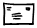
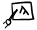
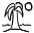

|  | Contact Info |
| Research | |
| Background | |
|  | Teaching |
| Publications | |
|  | Personal |
Dan Klein
Assistant Professor
Computer Science Division
University of California at Berkeley
Contact Information
| 775 Soda Hall, Berkeley, CA 94720-1776 | ||
| Phone | (510) 643-0805 |
Research
My research focuses on the automatic organization of natural language
information. Some topics of interest to me are:
- Unsupervised language acquisition
- Machine translation
- Efficient algorithms for NLP
- Information extraction
- Linguistically rich models of language
- Integrating symbolic and statistical methods for NLP
- Organization of the web
Background
My education, in reverse order.
| Stanford University | MS, PhD in Computer Science | 1999-2004 | |
| Oxford University, St. John's College | MSt in Linguistics | 1998-1999 | |
| Cornell University | BA in Math, CS, Linguistics (summa cum laude) | 1994-1998 | |
| Mt. Lebanon High School | 1990-1994 |
Some fellowships:
- Microsoft Faculty Fellowship, 2005
- Microsoft Graduate Fellowship, 2003
- British Marshall Fellowship, 1998
- NSF Graduate Fellowship, 1998
Some paper awards I've won:
- Best Paper Award, ACL 2003, for "Accurate Unlexicalized Parsing" with Chris Manning
- Best Paper Award, EMNLP 2004, for "Max-Margin Parsing" with Ben Taskar, Mike Collins, Chris Manning, and Daphne Koller
- Best Student Paper Award, NAACL 2006, for "Prototype-Driven Learning for Sequence Models" with Aria Haghighi
A vaguely current CV. [pdf]
Teaching
This term I am teaching cs294-7, the graduate statistical NLP course (once known as cs294-5). If the preceding link does not redirect you to the correct location, try here.
Publications
-
Thesis
- Dan Klein, "The Unsupervised Learning of Natural Language Structure," Ph.D. Thesis, Stanford University, 2005. [pdf]
-
Grammar Induction
![[new]](new.gif) Aria Haghighi and Dan Klein, "Prototype-Driven Grammar Induction," ACL, 2006. [pdf] [bib]
Aria Haghighi and Dan Klein, "Prototype-Driven Grammar Induction," ACL, 2006. [pdf] [bib]
-
Aria Haghighi and Dan Klein, "Protoype-Driven Learning for Sequence
Models," HLT-NAACL, 2006. [pdf] [bib]
- Dan Klein and Chris Manning, "Corpus-Based Induction of Syntactic Structure: Models of Dependency and Constituency," Proceedings of the 42nd Annual Meeting of the ACL, 2004. [ps] [pdf] [bib]
- Dan Klein and Chris Manning, "A Generative Constituent-Context Model for Improved Grammar Induction," Proceedings of the 40th Annual Meeting of the ACL, 2002. [ps] [pdf] [bib]
- Dan Klein and Chris Manning, "Natural Language Grammar Induction Using a Constituent-Context Model," Advances in Neural Information Processing Systems 14 (NIPS-2001), 2001. [ps] [pdf] [bib]
- Dan Klein and Chris Manning, "Distributional Phrase Structure Induction," Proceedings of the Fifth Conference on Natural Language Learning (CoNLL-2001), 2001. [ps] [pdf] [bib]
-
Machine Translation
-
Percy Liang, Alex Bouchard-Cote, Dan Klein, and Ben Taskar, "An End-to-End Discriminative Approach to Machine Translation," ACL, 2006. [pdf] [bib]
-
John DeNero, Dan Gillick, James Zhang, and Dan Klein, "Why Generative Phrase Models Underperform Surface Heuristics," Workshop on Statistical Machine Translation at NAACL, 2006. [pdf] [bib]
-
Percy Liang, Ben Taskar, and Dan Klein, "Consensus of Simple
Unsupervised Models for Word Alignment," HLT-NAACL 06, 2006. [pdf] [bib]
-
Simon Lacoste-Julien, Ben Taskar, and Dan Klein, "Word
Alignment via Quadratic Assignment," To appear in
HLT-NAACL 06, 2006. [pdf] [bib]
- Ben Taskar, Simon Lacoste-Julien, and Dan Klein, "A Discriminative Matching Approach to Word Alignment," EMNLP-05, 2005 [ps] [pdf]
-
Syntax and Parsing (Download Parser)
-
Slav Petrov, Leon Barrett, Romain Thibaux, and Dan Klein, "Learning Accurate, Compact, and Interpretable Tree Annotation," ACL, 2006. [pdf] [bib]
-
Slav Petrov, Leon Barrett, and Dan Klein, "Non-Local Modeling with a Mixture of PCFGs," CoNLL-X, 2006. [pdf] [bib]
- Dan Klein and Chris Manning, "Accurate Unlexicalized Parsing", ACL-03, 2003. [ps] [pdf] [bib]
- Dan Klein and Chris Manning, "Factored A* Search for Models over Sequences and Trees", Eighteenth International Joint Conference on Artificial Intelligence (IJCAI-03), 2003. [ps] [pdf] [bib]
- Dan Klein and Chris Manning, "A* Parsing: Fast Exact Viterbi Parse Selection", Proceedings of HLT-NAACL'03, 2003. [ps] [pdf] [bib]
- Dan Klein and Chris Manning, "Fast Exact Natural Language Parsing with a Factored Model", Advances in Neural Information Processing Systems 15 (NIPS-2002), 2002. [ps] [pdf] [bib]
- Dan Klein and Chris Manning, "Parsing and Hypergraphs", Proceedings of the 7th International Workshop on Parsing Technologies (IWPT-2001), 2001. [ps] [pdf] [bib]
- Dan Klein and Chris Manning, "Parsing with Treebank Grammars: Empirical Bounds, Theoretical Models, and the Structure of the Penn Treebank", Proceedings of the 39th Annual Meeting of the ACL, 2001. [ps] [pdf] [bib]
- Dan Klein and Chris Manning, "An O(n3) Agenda-Based Chart Parser for Arbitrary Probabilistic Context-Free Grammars", Stanford Technical Report, 2001. [ps] [pdf] [bib]
-
Information Extraction
-
Trond Grenager, Dan Klein, and Chris Manning, "Unsupervised
Learning of Field Segmentation Models for Information
Extraction", 2005 [ps]
[pdf]
- Dan Klein, Joseph Smarr, Huy Nguyen, and Chris Manning, "Named Entity Recognition with Character-Level Models", CoNLL'03, 2003. [ps] [pdf] [bib]
-
Machine Learning and NLP
- Ben Taskar, Dan Klein, Michael Collins, Daphne Koller, and Chris Manning, "Max-Margin Parsing", EMNLP, 2004. [ps] [pdf] [bib]
- Kristina Toutanova, Dan Klein, and Chris Manning, "Feature-Rich Part-of-Speech Tagging with a Cyclic Dependency Network", HLT-NAACL'03, 2003. [ps] [pdf] [bib]
- Dan Klein and Chris Manning, "Conditional Structure versus Conditional Estimation in NLP Models", EMNLP, 2002. [ps] [pdf] [bib]
- Dan Klein, Kristina Toutanova, H. Tolga Ilhan, Sepandar D. Kamvar, and Chris Manning, "Combining Heterogeneous Classifiers for Word-Sense Disambiguation", ACL WSD Workshop, 2002. [ps] [pdf] [bib]
-
Clustering (Demo Page)
- Sepandar D. Kamvar, Dan Klein, and Chris Manning, "Spectral Learning," IJCAI-03, 2003. [ps] [pdf] [bib]
- Dan Klein, Sepandar D. Kamvar, and Chris Manning, "From Instance-level Constraints to Space-Level Constraints: Making the Most of Prior Knowledge in Data Clustering," ICML, 2002. [ps] [pdf] [bib]
- Sepandar D. Kamvar, Dan Klein, and Chris Manning, "Interpreting and Extending Classical Agglomerative Clustering Algorithms using a Model-Based Approach," ICML, 2002. [ps] [pdf] [bib]
-
Web Search
- Taher Haveliwala, Aristides Gionis, Dan Klein, and Piotr Indyk, "Evaluating Strategies for Similarity Search on the Web", The Proceedings of the Eleventh International World Wide Web Conference (WWW), 2002. [ps] [pdf] [bib]
- Taher Haveliwala, Aristides Gionis, Dan Klein, and Piotr Indyk, "Similarity Search on the Web: Evaluation and Scalability Considerations", Stanford Technical Report, 2000. [ps] [pdf] [bib]
-
Tutorials
-
Max-Margin Methods for NLP: Estimation, Structure, and
Applications. Presented at ACL-05. [pdf]
- Maxent Models, Conditional Estimation, and Optimization, without the Magic. Presented at NAACL-03 and ACL-03. [pdf slides] [pdf handouts]
- Lagrange Multipliers without Permanent Scarring. [ps-draft] [pdf-draft]
-
Other Publications
- Dan Klein, "Review of Data-Oriented Parsing, edited by Rens Bod, Remko Scha, and Khalil Sima'an", Computational Linguistics, 30:2:240-244, MIT Press, 2004. [journal download page]
Personal
I do actually exist outside of the CS/linguistics world. I took
karate for most of my life, and have more recently picked up ballroom
dance. Competitive ballroom dance is just like karate, but with more music
and less scowling. I competed and taught for the Stanford
Ballroom Dance Team, and previously competed for the Cornell
Team and the Oxford Team.
I am a Talking Dolphin.